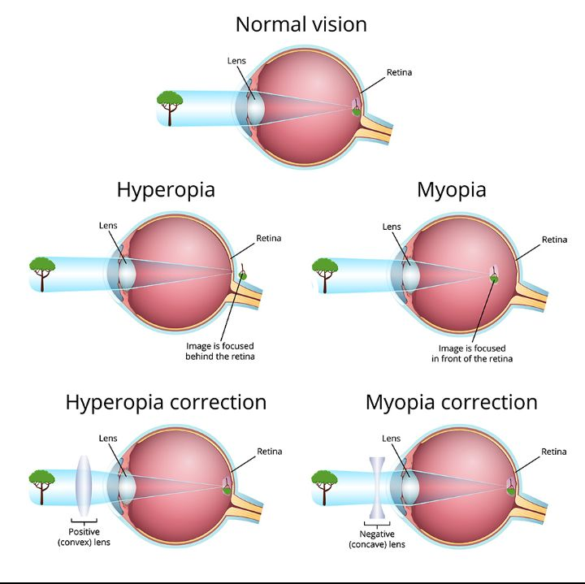
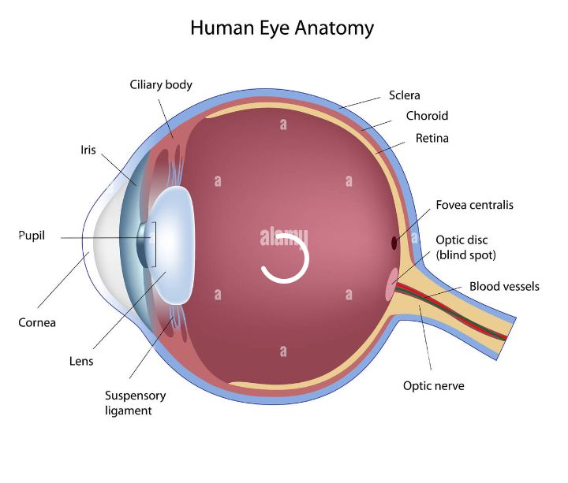
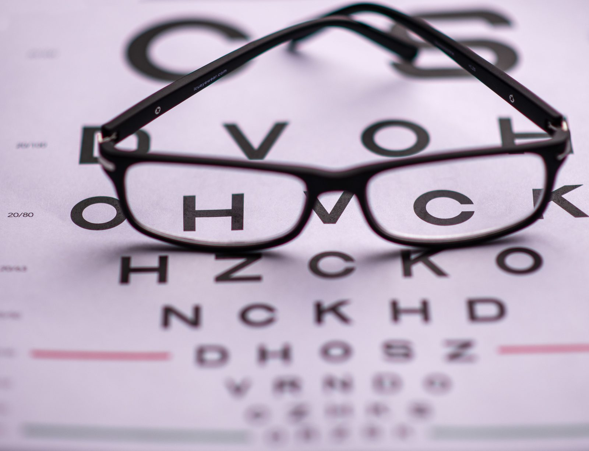
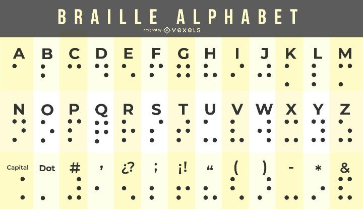
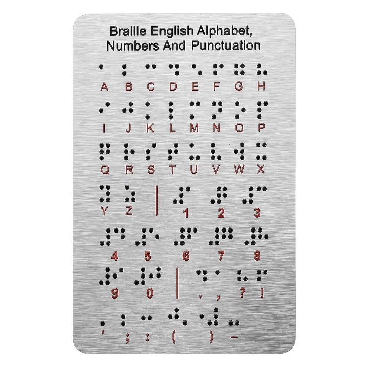
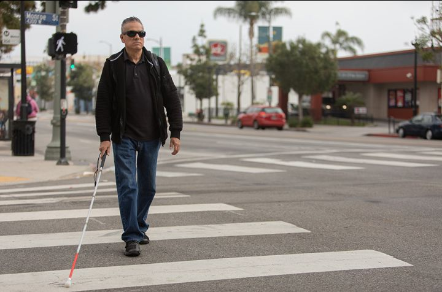
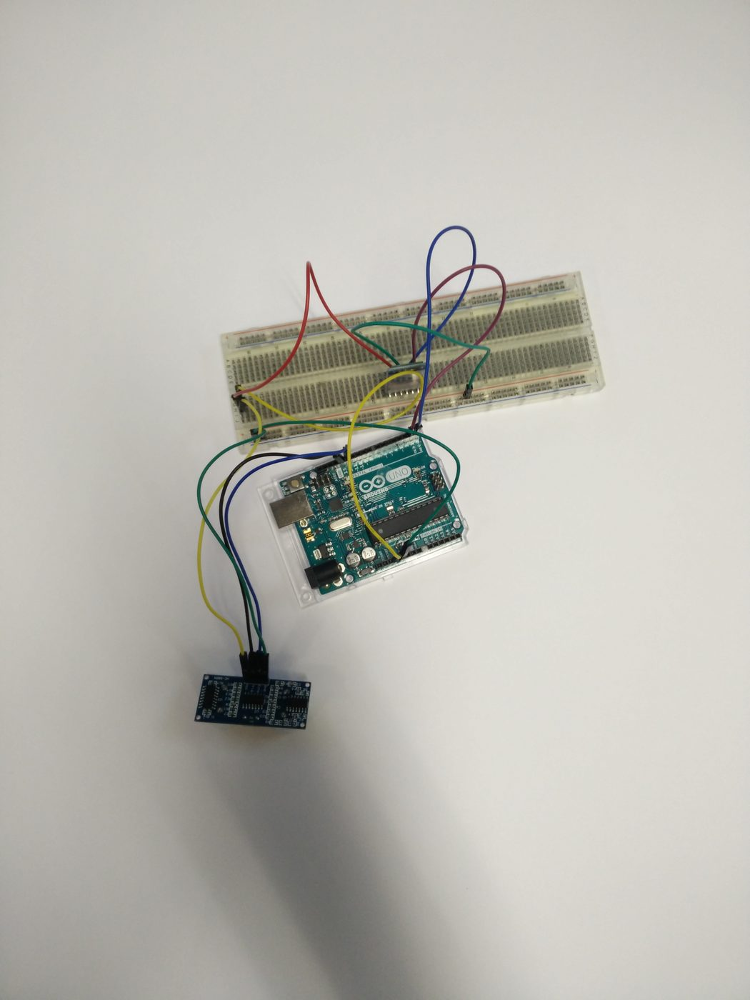

Óptica da visão e deficiências visuais
Física da luz / refraçãoEnxergar é um fenômeno físico. A luz se refrata ao atravessar o olho e precisa focar num ponto exato — a retina. Quando o foco cai fora dela, surge uma deficiência visual.
Miopia
A imagem foca antes da retina — o olho é longo demais ou a córnea curva demais. O que está longe fica embaçado. Correção: lente divergente (negativa).
Hipermetropia
A imagem foca depois da retina. O que está perto fica embaçado. Correção: lente convergente (positiva).
Astigmatismo
A córnea não é esférica; um eixo foca antes do outro. Correção: lente cilíndrica.

Como funciona o olho humano
Biologia + físicaO olho é uma câmera biológica. A luz entra pela córnea, é dosada pela pupila, focada pelo cristalino e projetada de cabeça para baixo na retina.
Córnea & cristalino
Concentram a luz. O cristalino muda de forma para focar perto ou longe — a acomodação.
Retina
Cones para cor e detalhe, bastonetes para luz fraca e movimento. Aqui a imagem física vira sinal nervoso, que segue pelo nervo óptico até o cérebro.

Óculos de simulação
ExperimentoÓculos de simulação fazem quem enxerga bem sentir como é ter uma deficiência visual — uma ferramenta de empatia e de ensino.
Neste site, a simulação é digital: a barra "Ver a página como →", no topo, aplica miopia, catarata ou glaucoma sobre tudo o que você está lendo agora. Compare com o par físico que construímos.

O sistema Braille
Acessibilidade tátilCriado por Louis Braille em 1824, o sistema usa uma célula de 6 pontos (2 × 3) em relevo. Cada combinação é uma letra, número ou símbolo, lida com a ponta dos dedos.
Pontos cheios = relevo sentido pelo dedo. Letras a–z e espaço.


Bengala eletrônica com Arduino
Tecnologia assistivaA bengala comum detecta obstáculos no chão pelo toque. A eletrônica soma um sensor ultrassônico que "enxerga" à frente e na altura do corpo, avisando por vibração antes do contato.
O princípio físico
O HC-SR04 emite ultrassom e mede o tempo do eco. A distância é d = (v · t) / 2, com v ≈ 343 m/s no ar. Divide-se por 2 porque o som vai e volta.
Componentes
Arduino Nano · sensor HC-SR04 · motor vibratório ou buzzer · bateria · a bengala como estrutura.

// lógica principal
long distancia = medirDistancia(); // cm
if (distancia < 50) { // obstáculo próximo
digitalWrite(vibraPin, HIGH); // vibra
} else {
digitalWrite(vibraPin, LOW);
}